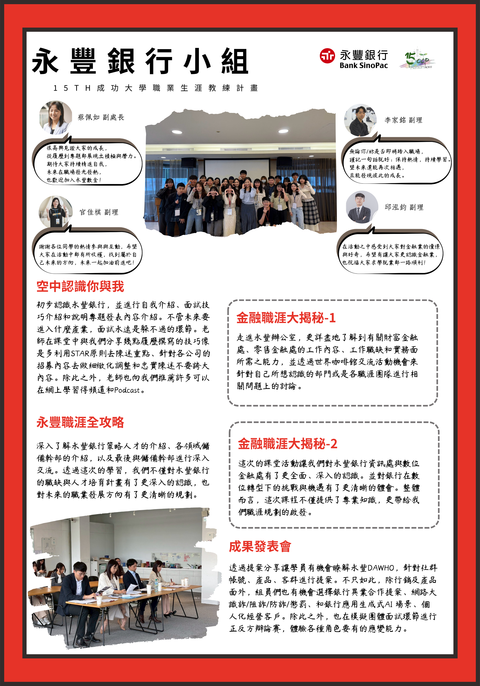

三角洲行动深度游玩
跨境游戏充值营收
微博玩家向内容阅读量
社群活动与内容节奏
Editor's Note
从玩家讨论里看见内容机会
我会从玩家讨论、内容传播和活动参与三个角度观察游戏：玩家为什么愿意回流、什么内容会变成话题，以及一次活动要怎么设计才有参与感。
这里整理了《三角洲行动》GaaS 分析、玩家商业化观察、社群活动提案，以及 Shopee 游戏充值运营和校园项目经验。重点不是堆经历，而是呈现我如何把观察转成内容与活动思路。
Case Study Features
作品专题
每个项目都对应一种运营能力：拆机制、看玩家、做活动、整理传播节奏。
Feature 01
Live Ops Analysis
《三角洲行动》GaaS 运营循环分析
从留存、赛季循环、商业化、FOMO 和玩家分层切入，整理游戏如何用长期节奏维持玩家参与。
Read Case Study
重点呈现 7 类运营循环，并把机制拆成“刺激点、回流理由、付费触发、玩家分层”几个可复用观察维度。
Feature 02
Campaign / Event
《三角洲行动》慈善家计划
以玩家社群里的“慈善家”语境为灵感，设计投稿、榜单、奖励和传播机制。
Read Case Study
这个提案更重视参与感和二创空间，让玩家的调侃与情绪变成可参与、可传播的活动内容。
Feature 03
Player Insight
三角洲玩家与商业化观察
观察枪皮、联动外观、限定内容、主播内容和短视频传播，理解 FPS 玩家为什么愿意讨论和付费。
Read Case Study
聚焦玩家消费心理与内容扩散路径，适合补充商业化活动、联动传播和社群话题策划的判断。
Operations Notebook
真实运营经验
Shopee 游戏充值经历让我接触订单、价格、客诉、复购和营收指标，也补足了从玩家需求到日常运营的执行经验。
2022 - 2023
Shopee 跨境游戏充值运营（游戏充值店铺）
- 面向台湾玩家需求，协助商品上架、价格方案调整与促销内容维护。
- 负责订单处理、跨境支付、客诉回复与复购维护。
- 半年累计约 90 万新台币营收，处理 1000+ 笔订单。
- 获得 200+ 条五星好评，客户复购率约 30%。
Player Lens
我的游戏经验
三角洲行动
游玩 1000+ 小时，多赛季巅峰段位，累计付费 1 万+。熟悉枪皮、通行证、联动外观、主播内容、短视频传播与版本平衡讨论。
王者荣耀
8 年以上深度游玩，高段位经历。长期关注皮肤、抽卡、节庆活动、限时任务与社群传播。
金铲铲之战
关注版本更新、羁绊设计、付费内容和阵容讨论，从策略游戏视角补充对赛季机制和用户留存的理解。
Skill Tabs
能力标签页
玩家需求观察
社群内容分析
活动企划
榜单与奖励设计
玩家情绪洞察
商业化观察
内容选题
短视频传播
成果展示
用户沟通
Excel
商业分析
PowerPoint
Word
Python 基础
Stata 基础
SQL 学习中
ChatGPT
Midjourney
Canva
剪映
Campus & Research
校园项目经历
这部分补充展示活动协作、资料整理、研究写作和成果呈现能力。
国立成功大学｜中国文学系
文学训练强化文本理解、叙事整理与社群语境判断；同时补充商业分析和 Python，连接内容观察与运营分析。

ESG 永续企业大揭密
协助活动流程设计、企业与嘉宾对接、现场协调、资料整理与成果呈现，积累活动企划与执行落地经验。
查看 PDFThe Effect of Minimum Wage Increases on Youth
北京大学暑校论文，使用 DID 与 Event Study 分析最低工资调整对青年失业的影响。
查看 PDFThe Effectiveness of China's Fiscal Stimulus Policies during Economic Slowdowns
对比 2008 金融危机与 2020 疫情期间中国财政刺激政策，整理宏观经济资料并完成英文写作。
查看 PDFBack Cover
Looking for someone who understands players, communities, and live ops?
我希望参与游戏社群、活动策划、内容运营与玩家洞察相关的实习项目。